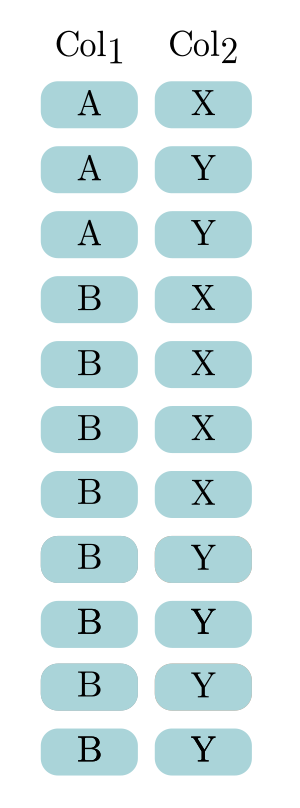

Agrupar#
En esta sección se presentan las principales clausulas relacionadas con agrupar datos y realizar cálculos agregados con esos datos agrupados.
GROUP BY#
Agrupa los resultados de acuerdo a los valores únicos de una o más columnas. Normalmente se usa con Aggregate functions, aunque no necesariamente. Las columnas que se utilicen en GROUP BY deben de ser seleccionadas en SELECT y no son a las que se les hará un aggregate. Esta sentencia va después de WHERE.
-- Plantilla básica del uso de GROUP BY
SELECT col1 [, col2, ...] [,aggregate_function(coli), ...]
FROM table_name
[WHERE ...]
GROUP BY col1 [, col2, ...]
col1, col2, … son columnas. No pueden ser las que se usarán con las aggregate functions. En caso de que haya aggregate functions, todas las columnas que no se usarán con aggregates functions deben de ir en
GROUP BY(a veces no es necesario, cuando las relaciones entre las columnas son uno a uno).aggregate_function(col) es el nombre de una Aggregate functions.
En PostgreSQL se puede usar los alias de las columnas en
GROUP BY.En lugar de usar los nombres de las columnas se puede usar números (1, 2, …), que hacen referencia a los campos en
SELECTpor el orden en los que fueron declarados.
Ejemplos:
-- GROUP BY simple
SELECT facid, SUM(slots)
FROM cd.bookings
GROUP BY facid
ORDER BY facid;
-- GROUP BY múltiple y uso de alias
SELECT facid, EXTRACT(month FROM starttime) AS month, SUM(slots) AS "Total Slots"
FROM cd.bookings
WHERE EXTRACT(year FROM starttime) = 2012
GROUP BY facid, month
ORDER BY facid, month;
GROUP BY simple: En este se enlista el total de slots por facid.
GROUP BY múltiple: En este ejemplo se enlista el total de slots por facid y por mes. Notar que en PostgreSQL se pueden usar los alias de columnas en
GROUP BY.
HAVING#
Es un sustituto de WHERE, se usa cuando se usan aggregate functions y GROUP BY, va después de GROUP BY. Se utiliza el aggregate function como tal, no se puede poner el alias que se le dio al aggregate.
-- Plantilla básica del uso de HAVING
SELECT col1 [, col2, ...] [,aggregate_function(coli), ...]
FROM table_name
[WHERE ...]
GROUPY BY col1 [, col2, ...]
HAVING aggregate_function(coli) condición[, ...]
aggregate_function(col) es el nombre de la agregate function que se utilizó en
SELECTy la columna que se utilizó en la misma. No se pueden usar alias.condición es cualquier comparación que utilice Operadores de Comparación o cualquier otra expresión que retorne valores
BOOL.
Ejemplos:
-- Uso de HAVING
SELECT facid, SUM(slots) AS "Total Slots"
FROM cd.bookings
GROUP BY facid
HAVING SUM(slots) > 1000
ORDER BY facid;
HAVING: En este ejemplo se enlistan los facilities que tienen más de 1000 slots en total.
GROUPING SETS#
Un grouping set es un conjunto de columnas por las cuales se agrupa un dataset. Se calcula una aggregate function con base a los valores únicos de ese grouping set, para ello se utiliza GROUP BY.
GROUPING SETS permite definir múltiples grouping sets en un mismo query. Lo que permite mostrar la aggregate function para distintos GROUP BY de manera más sencilla.
-- Plantilla de uso de GROUPING SETS
SELECT col1, col2, aggregate_function(coli)[, ...]
FROM table_name
GROUP BY GROUPING SETS((col1, col2), (col1), (col2), ())
En esta plantilla se usan dos columnas para calcular los grouping sets, pero pueden ser más.
col1, col2 tuvieron que haber sido seleccionadas en
SELECT.(col1, col2): Indica que se calculen los agregados de las combinaciones de valores únicos de col1 y col2. Equivaldría a:
GROUP BY col1, col2(col1): Indica que se calculen los agregados para los valores únicos de col1, la misma lógica se aplica para(col2). Equivaldría a:
GROUP BY col1(): Indica que se calcule el agregado de todos los valores. Equivaldría a no poner unGROUP BY.No necesariamente se tiene que incluir los cuatro grouping sets, es solo un ejemplo de cómo se deben de poner, pero se puede poner desde uno, hasta los cuatro.
Para conceptualizar cómo funcionan los grouping sets considerar que se tiene la siguiente tabla:
{kind=link}
Si se calcula un pivot tabla de la tabla anterior, con el aggregate COUNT(), donde además se cálcula los totales de filas, columnas y el gran total obtendríamos una tabla similar a la tabla izquierda en la siguiente imagen:
{kind=link}
La tabla de la derecha sería su equivalente en SQL y que es resultado de aplicar grouping sets.
(col1, col2): Los agregados de las combinaciones de valores únicos de col1 y col2. Color azul claro ■.(col1)y(col2): Los agregados para los valores únicos de col1 y col2 respectivamente. Áreas azúl oscuro ■ para col1 y café claro ■ para col2.(): Los agregados de todo. Equivaldría a no poner unGROUP BY. Área café oscuro ■.
Ejemplos:
-- GROUPING SETS
SELECT facid, EXTRACT('month' FROM starttime) AS month, SUM(slots)
FROM cd.bookings
WHERE EXTRACT('year' FROM starttime) = 2012
GROUP BY GROUPING SETS((facid, month), (facid), ())
ORDER BY facid, month;
GROUPING SETS: En este ejemplo se enlistan el total de slots por facid y mes. Notar que el mismo resultado se podría obtener con un
ROLLUP(facid, month)
CUBE#
Es una subclase de GROUP BY, permite generar múltiples groupings sets por default. Calcula los agregados de todas las combinaciones de valores únicos de las columnas que se pasen a la función.
-- Plantilla de uso de CUBE
SELECT col1, col2, ..., aggregate_function(coli)[, ...]
FROM table_name
GROUP BY CUBE(col1, col2, ...)
col1, col2, ...tuvieron que haber sido seleccionadas enSELECT. No pueden ser las columnas a las que se les calculó un aggregate function.Por ejemplo,
GROUP BY CUBE(col1, col2, col3)equivaldría a:
GROUPING SETS ((c1, c2, c3), (c1, c2), (c1, c3), (c2, c3), (c1), (c2), (c3), ())
Se puede hacer CUBE parciales, por ejemplo:
-- Plantilla de uso de CUBE parcial
SELECT col1, col2, aggregate_function(coli)[, ...]
FROM table_name
GROUP BY col1, CUBE(col2, col3)
En este ejemplo no se calcularían los totales para col2 ni col3, ni los grandes totales. Equivaldría a:
GROUPING SETS ((c1, c2, c3), (c1, c2), (c1, c3), (c1))Se puede pensar en esto como si primero se hace las combinaciones de
CUBE(col2, col3)y después a cada resultado se le concatena el c1 al principio.
ROLLUP#
Es una subclase de GROUP BY, permite generar múltiples groupings sets. ROLLUP asume jerarquía entre las columnas, lo que permite que se puedan calcular subtotales y totales de manera sencilla. Utilizar solo cuando los datos están jerarquizados.
-- Plantilla de uso de ROLLUP
SELECT col1, col2, ..., aggregate_function(coli)[, ...]
FROM table_name
GROUP BY ROLLUP(col1, col2, ...)
col1, col2, ...tuvieron que haber sido seleccionadas enSELECT. No pueden ser las columnas a las que se les calculó un aggregate function.Por ejemplo,
GROUP BY ROLLUP(col1, col2, col3)asumiría que col1 > col2 > col3 (jerárquicamente), entonces equivaldría a:
GROUPING SETS ((c1, c2, c3), (c1, c2), (c1), ())
Se puede hacer ROLLUP parciales, por ejemplo:
-- ROLLUP parcial
SELECT col1, col2, col3, aggregate_function(coli)[, ...]
FROM table_name
GROUP BY col1, ROLLUP(col2, col3)
En este ejemplo no se calcularían los subtotales para c2 ni los grandes totales. Equivaldría a:
GROUPING SETS ((c1, c2, c3), (c1, c2), (c1))Se puede pensar en esto como que primero se hace las combinaciones de
ROLLUP(col2, col3)y después a cada resultado se le concatena el c1 al principio.
Ejemplos:
-- ROLLUP
SELECT facid, EXTRACT('month' FROM starttime) AS month, SUM(slots)
FROM cd.bookings
WHERE EXTRACT('year' FROM starttime) = 2012
GROUP BY ROLLUP(facid, month)
ORDER BY facid, month;
ROLLUP: En este ejemplo se enlistan el total de slots por facid y mes. Notar que el mismo resultado se podría obtener con un
GROUPING SETS((facid, month), (facid), ())